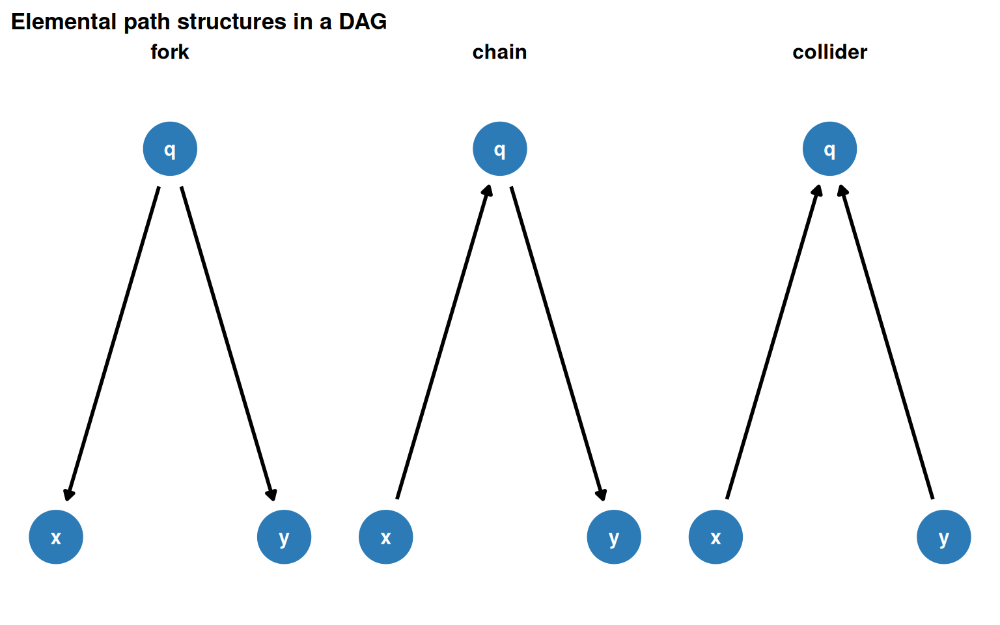
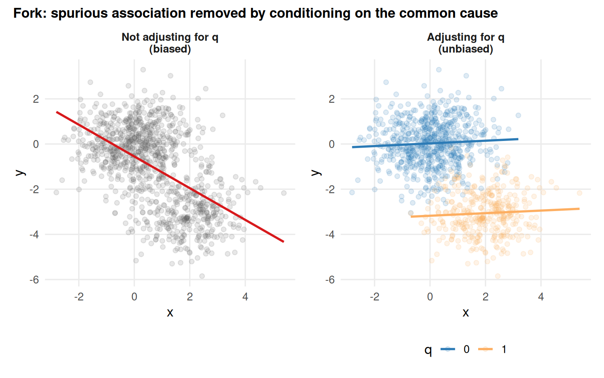
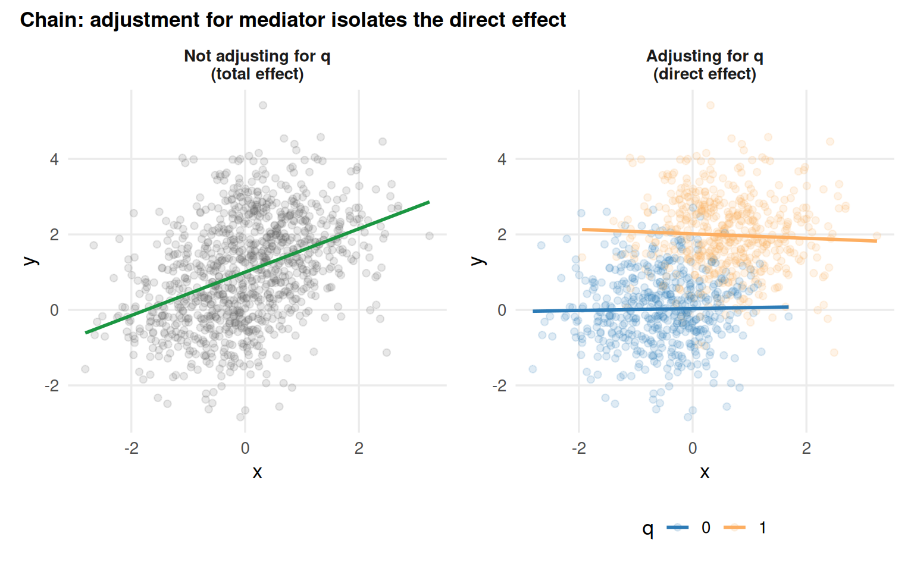
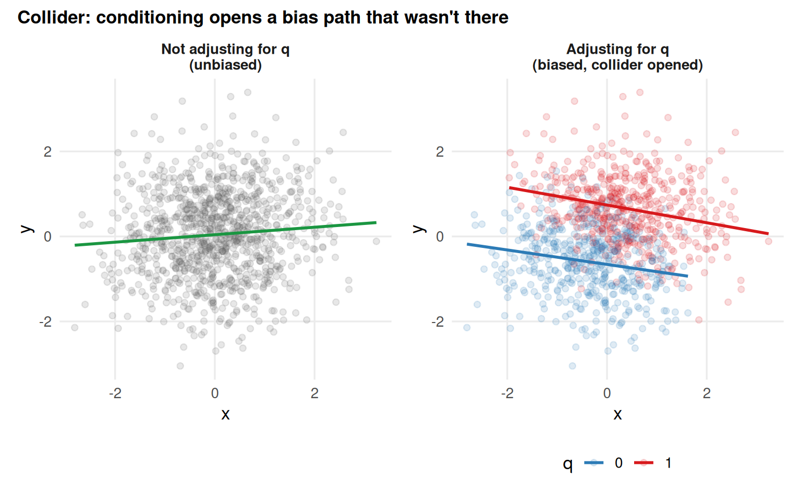
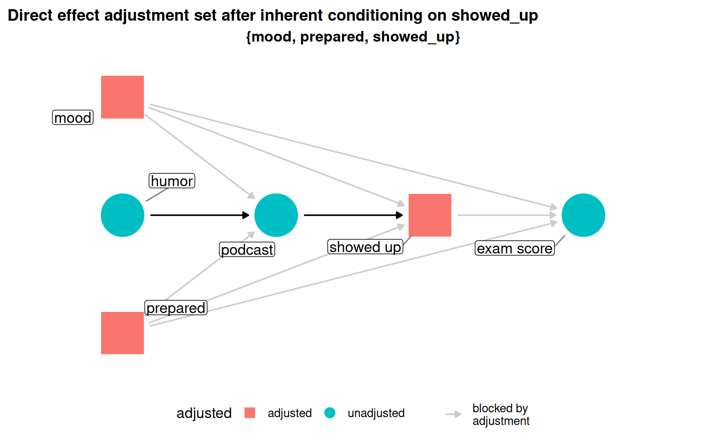
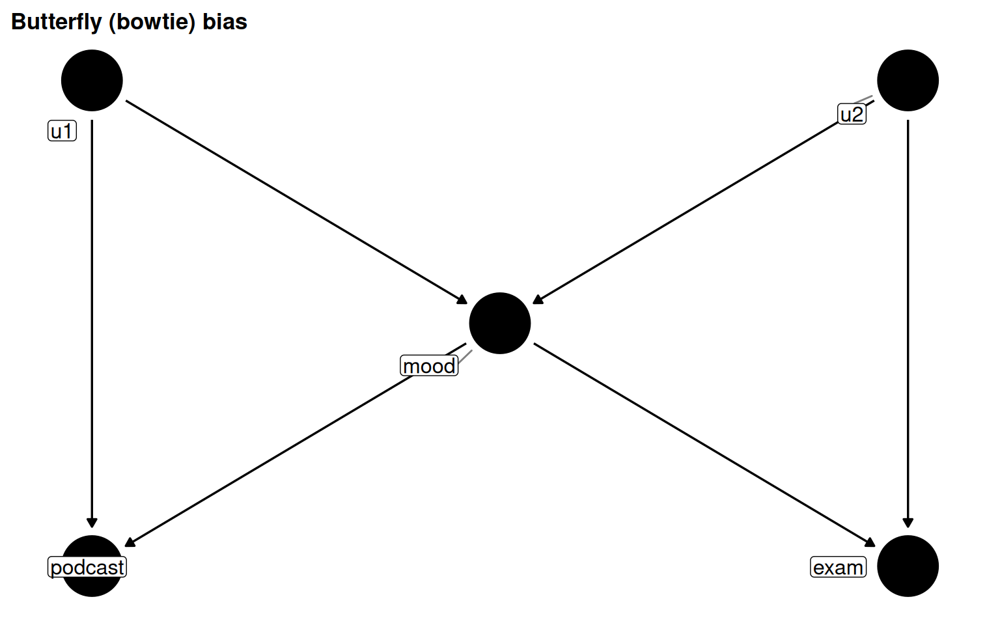

DAGs (Directed Acyclic Graphs) let researchers make their causal assumptions explicit and queryable. The chapter covers three things: what DAGs are and how their path types behave statistically, how to build and query them in R using ggdag, and practical advice on building defensible DAGs in applied work.
4.1 Visualizing Causal Assumptions
A DAG is a graph where nodes are variables and edges are directed arrows representing causal relationships. The direction of an arrow encodes the direction of causation: x -> y means x causes y. Crucially, the graph must be acyclic: no variable can be its own ancestor.
DAGs encode a researcher’s assumptions about causal structure, not parameter estimates. An arrow says “I believe this cause exists for at least one unit”; it says nothing about the magnitude or functional form of the effect. This non-parametric character distinguishes causal DAGs from structural equation models (SEMs), which require parametric assumptions and estimate the entire graph.
The three elemental path types are forks, chains, and colliders. Every backdoor path decomposes into these structures.
Show code
coords <-list(x =c(x =0, y =2, q =1),y =c(x =0, y =0, q =1))fork <-dagify(x ~ q, y ~ q, exposure ="x", outcome ="y", coords = coords)chain <-dagify(q ~ x, y ~ q, exposure ="x", outcome ="y", coords = coords)collider <-dagify(q ~ x + y, exposure ="x", outcome ="y", coords = coords)dag_flows <-map(list(fork = fork, chain = chain, collider = collider), tidy_dagitty) |>map("data") |>list_rbind(names_to ="dag") |>mutate(dag =factor(dag, levels =c("fork", "chain", "collider")))dag_flows |>ggplot(aes(x = x, y = y, xend = xend, yend = yend)) +geom_dag_edges(edge_width =1) +geom_dag_point(colour ="#2c7bb6", size =14) +geom_dag_text(colour ="white", size =4) +facet_wrap(~dag) +expand_plot(expand_x =expansion(c(0.2, 0.2)),expand_y =expansion(c(0.2, 0.2)) ) +labs(title ="Elemental path structures in a DAG")

Figure 5.1: Three elemental causal path structures. Forks share a common cause; chains pass an effect through a mediator; colliders share a common descendant.
Path types and what they imply
Table 5.1: The three path structures, their statistical properties, and when to adjust.
Path type
Direction of q
Path status
x-y correlated?
Adjust for q?
Fork (confounder)
q -> x and q -> y
Open
Yes (spurious)
Yes, blocks confounding
Chain (mediator)
x -> q -> y
Open
Yes (via q)
Depends on question (blocks indirect effect)
Collider
x -> q <- y
Closed
No
No, opens a biasing path
Backdoor paths
Any open, non-causal path from the exposure to the outcome is a backdoor path. Forks are the classic backdoor path. Conditioning on a collider can also open a previously closed path, creating a backdoor where none existed.
Confounding in practice
Show code
set.seed(123)n <-1000q_conf <-rbinom(n, size =1, prob =0.35)x_conf <-2* q_conf +rnorm(n)y_conf <--3* q_conf +rnorm(n)confounder_data <-tibble(x = x_conf, y = y_conf, q =as.factor(q_conf))p_conf1 <- confounder_data |>ggplot(aes(x, y)) +geom_point(alpha =0.15, colour ="#636363") +geom_smooth(method ="lm", formula = y ~ x, se =FALSE, colour ="#d7191c", linewidth =1) +facet_wrap(~"Not adjusting for q\n(biased)") + data_themep_conf2 <- confounder_data |>ggplot(aes(x, y, colour = q)) +geom_point(alpha =0.15) +geom_smooth(method ="lm", formula = y ~ x, se =FALSE, linewidth =1) +scale_colour_manual(values =c("0"="#2c7bb6", "1"="#fdae61")) +facet_wrap(~"Adjusting for q\n(unbiased)") + data_themep_conf1 + p_conf2 +plot_annotation(title ="Fork: spurious association removed by conditioning on the common cause",theme =theme(plot.title =element_text(size =13, face ="bold")) )

Figure 5.2: A fork: q causes both x and y. Unadjusted, x and y appear correlated. Conditioning on q reveals the null relationship.
Mediation in practice
Show code
set.seed(123)x_med <-rnorm(n)lp <-2* x_med +rnorm(n)q_med <-rbinom(n, size =1, prob =1/ (1+exp(-lp)))y_med <-2* q_med +rnorm(n)mediator_data <-tibble(x = x_med, y = y_med, q =as.factor(q_med))p_med1 <- mediator_data |>ggplot(aes(x, y)) +geom_point(alpha =0.15, colour ="#636363") +geom_smooth(method ="lm", formula = y ~ x, se =FALSE, colour ="#1a9641", linewidth =1) +facet_wrap(~"Not adjusting for q\n(total effect)") + data_themep_med2 <- mediator_data |>ggplot(aes(x, y, colour = q)) +geom_point(alpha =0.15) +geom_smooth(method ="lm", formula = y ~ x, se =FALSE, linewidth =1) +scale_colour_manual(values =c("0"="#2c7bb6", "1"="#fdae61")) +facet_wrap(~"Adjusting for q\n(direct effect)") + data_themep_med1 + p_med2 +plot_annotation(title ="Chain: adjustment for mediator isolates the direct effect",theme =theme(plot.title =element_text(size =13, face ="bold")) )

Figure 5.3: A chain: adjusting for the mediator q removes the indirect effect and leaves only the direct (null) effect.
Collider bias in practice
Show code
set.seed(123)x_col <-rnorm(n)y_col <-rnorm(n)lp_col <-2* x_col +3* y_col +rnorm(n)q_col <-rbinom(n, size =1, prob =1/ (1+exp(-lp_col)))collider_data <-tibble(x = x_col, y = y_col, q =as.factor(q_col))p_col1 <- collider_data |>ggplot(aes(x, y)) +geom_point(alpha =0.15, colour ="#636363") +geom_smooth(method ="lm", formula = y ~ x, se =FALSE, colour ="#1a9641", linewidth =1) +facet_wrap(~"Not adjusting for q\n(unbiased)") + data_themep_col2 <- collider_data |>ggplot(aes(x, y, colour = q)) +geom_point(alpha =0.15) +geom_smooth(method ="lm", formula = y ~ x, se =FALSE, linewidth =1) +scale_colour_manual(values =c("0"="#2c7bb6", "1"="#d7191c")) +facet_wrap(~"Adjusting for q\n(biased, collider opened)") + data_themep_col1 + p_col2 +plot_annotation(title ="Collider: conditioning opens a bias path that wasn't there",theme =theme(plot.title =element_text(size =13, face ="bold")) )

Figure 5.4: A collider: x and y are independent, but conditioning on q induces a spurious association.
4.2 DAGs in R with ggdag
The ggdag package wraps dagitty with a tidy, ggplot2-compatible interface.
Figure 5.8: Adjusting for the correct set (mood + prepared) recovers the null effect. The unadjusted estimate is spurious.
Wrong DAG, wrong answer
If the DAG is mis-specified, for instance by omitting mood as a confounder, then even after adjustment the estimate remains biased. DAG correctness is a prerequisite; the algebra cannot fix a wrong causal story.
4.3 Structures of Causality
4.3.1 Advanced confounding
Backdoor paths need not pass through a single common cause. In a more complex version of the podcast DAG, adding alertness (caused by mood) and skills_course (which frees up time for podcasts and drives preparedness) creates three backdoor paths and four valid minimal adjustment sets.
Figure 5.10: Four minimal adjustment sets for podcast_dag2. Each set closes all three backdoor paths.
Table 5.3: Valid minimal adjustment sets for the expanded podcast DAG and considerations for choosing between them.
Adjustment set
Backdoor paths closed
Practical considerations
alertness + prepared
All three
Alertness may be hard to measure accurately
alertness + skills_course
All three
skills_course is objectively verifiable; preferred if well measured
mood + prepared
All three
mood + prepared are familiar confounders with moderate measurement quality
mood + skills_course
All three
skills_course is cleanly measured; mood may vary by self-report quality
4.3.2 Selection bias and mediation
Selection bias is collider-stratification bias induced by the study design itself, the act of selecting units into the sample. If showing up to the exam (showed_up) is caused by both podcast and other confounders, inherently conditioning on that variable (by only observing those who showed up) opens a collider path.
Figure 5.11: podcast_dag3: showed_up is both a collider and a mediator. Inherent stratification on this variable limits what causal effect we can estimate.
When the total effect is unrecoverable (indirect path blocked at showed_up), the direct effect can sometimes still be estimated.
Show code
podcast_dag3 |>adjust_for("showed_up") |>ggdag_adjustment_set(effect ="direct", text =FALSE, use_labels ="label") +labs(title ="Direct effect adjustment set after inherent conditioning on showed_up")

Figure 5.12: Switching the estimand from total to direct effect yields a valid adjustment set even after conditioning on showed_up.
M-bias and butterfly bias
M-bias occurs when a pre-exposure collider, m, is caused by two unmeasured variables a and b that separately cause the exposure and outcome. The path through m is closed by default; conditioning on m opens it.
Figure 5.13: M-bias: m is a collider that predates exposure and outcome. The backdoor path x <- a -> m <- b -> y is closed; conditioning on m opens it.
Butterfly (bowtie) bias combines M-bias with confounding: mood is both a confounder (must be adjusted) and a collider (adjustment opens a path). When the unmeasured causes are absent from data, there is no clean solution. Empirical guidance: confounding bias tends to be larger than collider bias from M-structures, so adjusting is still the lesser evil.
Show code
butterfly_bias(x ="podcast", y ="exam", m ="mood", a ="u1", b ="u2") |>ggdag(text =FALSE, use_labels ="label") +labs(title ="Butterfly (bowtie) bias")

Figure 5.14: Butterfly bias: mood is simultaneously a confounder and a collider. Controlling for mood blocks confounding but opens the collider path via u1 and u2.
4.3.3 Instrumental variables and precision variables
Table 5.4: Comparison of instrumental variables and precision variables.
Figure 5.15: humor is an IV (causes podcast, not exam); grader_mood is a precision variable (causes exam, not podcast).
4.3.4 Measurement error and missingness
Separating the true value of a variable from its observed value in the DAG exposes how measurement bias enters the causal estimate. In recall bias, the outcome influences the exposure measurement error, introducing a non-causal association between observed exposure and outcome.
Figure 5.16: Measurement error DAG: outcome_real causes exposure_error, creating recall bias. The observed exposure is a biased proxy for the true exposure.
4.4 Recommendations for Building DAGs
Summary table
Table 5.5: Ten recommendations for building defensible DAGs.
#
Recommendation
Detail
1
Iterate early and often
Build the DAG before analysis, ideally before data collection. Share with domain experts and iterate.
2
Consider your question
The causal structure varies by population and time. What is a confounder in one setting may be irrelevant in another.
3
Order nodes by time
Time ordering clarifies assumptions (cause precedes effect) and makes complex DAGs easier to read.
4
Consider the whole data collection process
Found data inherits conditioning on the collection mechanism. Understand selection into your sample.
5
Include variables you don't have
Mark unmeasured variables as latent; ggdag returns only adjustment sets feasible with your data.
6
Saturate your DAG, then prune
Default to including arrows; not-including is the stronger assumption. Prune only implausible arrows.
7
Include instruments and precision variables
Neither type changes the adjustment set, but both inform modeling decisions and can flag IV opportunities.
8
Focus on causal structure first, then measurement bias
Start with a perfectly-measured DAG; then overlay measurement error as a sensitivity exercise.
9
Pick adjustment sets most likely to succeed
When multiple valid sets exist, prefer the one with better-measured, better-modeled variables.
10
Use robustness checks
Negative controls, DAG-data consistency checks, and alternate adjustment sets all stress-test your assumptions.
Figure 5.18: Pruned DAG: implausible arrows (humor -> prepared and humor -> exam, since grading is blinded) removed.
Both the saturated and pruned DAGs share the same minimal adjustment set (mood + prepared), showing that the pruning decision doesn’t change what must be adjusted here.
Feedback loops are feedforward loops
Apparent feedback loops are actually variables co-evolving through time. Expressing this correctly as a time-unrolled DAG avoids the cyclic violation.
Figure 5.19: A/C use and global temperature co-evolve over time. The cyclic mental model unfolds into a feedforward DAG.
DAG properties in applied health research
The table below summarises empirical properties of DAGs used in 144 applied health research papers (Tennant et al. 2020).
Table 5.6: Empirical properties of 144 DAGs in applied health research (Tennant et al. 2020). Most DAGs were only ~46% saturated; fewer than a third reported their estimand.
Characteristic
N = 144
DAG properties
Number of nodes
12 (IQR: 9-16)
Number of arcs
29 (IQR: 19-42)
Node-to-arc ratio
2.30 (IQR: 1.75-3.00)
Saturation proportion
0.46 (IQR: 0.31-0.67)
Fully saturated, Yes
4 (3%)
Fully saturated, No
140 (97%)
Reporting
Reported estimand, Yes
40 (28%)
Reported estimand, No
104 (72%)
Reported adjustment set, Yes
80 (56%)
Reported adjustment set, No
64 (44%)
Key concepts glossary
Table 5.7: Key terms from Chapter 4.
Term
Definition
DAG
Directed Acyclic Graph, a causal diagram with directed arrows and no cycles
SCM
Structural Causal Model, the class of non-parametric models that DAGs belong to
Node / Edge
Node: a variable. Edge: a directed arrow encoding a causal relationship
Fork
q -> x and q -> y: shared common cause; open path; induces confounding
Chain
x -> q -> y: effect passes through mediator; open path; blocks causal flow if adjusted
Collider
x -> q <- y: shared descendant; closed path; conditioning on it opens a biasing path
Open path
A path that transmits statistical association between exposure and outcome
Closed path
A path that does not transmit association (e.g., at a collider)
Backdoor path
Any open, non-causal path from exposure to outcome that must be blocked
Adjustment set
A set of variables that, when adjusted, blocks all backdoor paths
Collider-stratification bias
Bias introduced by conditioning on a collider (also called selection bias)
Instrumental variable
A cause of exposure only, not outcome; useful for IV estimation methods
Precision variable
A cause of outcome only, not exposure; reduces variance when included in model
Sharp null
No unit has an individual causal effect; justifies removing an arrow
Proxy confounder
A measured variable correlated with an unmeasured confounder; reduces but rarely eliminates confounding
Chapter connections
Chapter 10 covers estimands in depth (what are you actually trying to estimate?).
Chapter 14 covers interaction and effect modification.
Chapter 15 covers measurement error and missingness.
Chapter 16 covers sensitivity analysis, including robustness checks.
Chapter 17 covers causal mediation analysis.
Chapter 18 covers time-varying confounding and feedforward relationships.